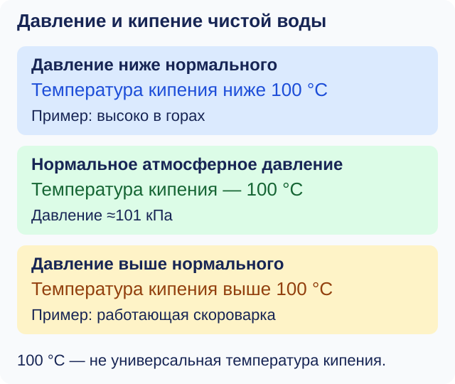

Кипение. Удельная теплота парообразования и конденсации. Зависимость температуры кипения от атмосферного давления
При нагревании воды в кастрюле сначала на дне появляются мелкие пузырьки, слышен шум, но вода ещё не кипит. Потом пузырьки поднимаются всё выше и лопаются на поверхности. Наконец вода кипит, а термометр показывает почти одно и то же значение, пока в кастрюле остаётся вода. Почему температура перестала расти и куда теперь уходит энергия?
Кипение и испарение
Переход жидкости в газ называют парообразованием. Он возможен двумя способами, и их важно различать.
При испарении молекулы покидают жидкость с её поверхности. При кипении пар возникает и внутри жидкости, в пузырьках. Для превращения жидкости в пар требуется энергия. При испарении она может браться из внутренней энергии самой жидкости, и тогда жидкость охлаждается; подвод теплоты извне не обязателен. Обратный переход пара в жидкость называют конденсацией.
Как вода закипает
При первом нагревании на дне и стенках сосуда могут появляться маленькие пузырьки воздуха и других газов, растворённых в воде. При нагревании растворимость многих газов уменьшается, и они выделяются из жидкости. Появление таких пузырьков само по себе ещё не означает, что вода закипела.
При дальнейшем нагревании в пузырьки интенсивно испаряется вода. Чтобы пузырёк пара мог расти, давление внутри него должно преодолевать давление окружающей жидкости. Оно складывается из атмосферного давления и давления слоя воды над пузырьком. В упрощённом школьном объяснении дополнительным влиянием поверхностного натяжения пренебрегают.
Когда вода прогревается достаточно, пузырьки пара увеличиваются, отрываются от дна и поднимаются вверх. В верхних, ещё более холодных слоях пар внутри пузырька конденсируется, и пузырёк может схлопнуться — отсюда шум и «бульканье» перед кипением. При настоящем кипении пузырьки добираются до поверхности и лопаются, выпуская пар в воздух. Конвекция выравнивает температуру, и кипение охватывает весь объём.
Почему температура при кипении не меняется
Температура связана со средней кинетической энергией теплового движения частиц. При нагревании жидкости до кипения эта энергия растёт, и термометр показывает повышение температуры. Но при фазовом переходе энергия расходуется иначе.
В идеальной модели без потерь теплота, получаемая кипящей водой, расходуется на превращение воды в пар, а не на повышение температуры. В реальности часть энергии нагревателя уходит также на нагрев посуды и в окружающую среду. Кипящая чистая вода при нормальном атмосферном давлении имеет температуру около \(100\,{}^\circ\text{C}\), и более сильный огонь не делает её существенно горячее. Когда вода выкипит, дно кастрюли начнёт нагреваться значительно сильнее, что опасно.
Удельная теплота парообразования
Разные вещества при одинаковой массе требуют разной энергии для превращения в пар. Эту особенность характеризует удельная теплота парообразования.
Для воды при \(100\,{}^\circ\text{C}\) и нормальном атмосферном давлении принимают
Это округлённое учебное значение: в разных таблицах можно встретить близкие числа. Запись означает, что для превращения \(1\ \text{кг}\) воды при \(100\,{}^\circ\text{C}\) в пар при той же температуре нужно около \(2{,}3\cdot10^6\ \text{Дж}\). Нагревание воды до кипения в эту величину не входит — его рассчитывают отдельно по формуле \(Q=cm\Delta t\).
При конденсации происходит обратный переход, и вещество отдаёт энергию. При тех же условиях модуль удельной теплоты парообразования остаётся тем же, поэтому для конденсации массы \(m\) выделяется
Здесь \(Q_{\text{конд}}\) — положительная величина: столько теплоты пар отдаёт окружающим телам, превращаясь в жидкость при той же температуре. Поэтому при одинаковых массе и начальной температуре пар может передать коже больше энергии, чем горячая вода.
Нагревание и кипение: два этапа
Рассмотрим воду, которую нагревают от \(20\,{}^\circ\text{C}\) до кипения при нормальном атмосферном давлении, а затем полностью испаряют. Потери энергии и нагревание сосуда не учитываем.

На графике по горизонтальной оси отложено накопленное количество полученной теплоты, по вертикальной — температура. Наклонный участок соответствует нагреванию воды: температура растёт от \(20\) до \(100\,{}^\circ\text{C}\). Затем начинается горизонтальный участок: вода кипит при \(100\,{}^\circ\text{C}\), а её температура не меняется, хотя теплота продолжает поступать. Длина горизонтального участка определяется произведением \(Lm\): чем больше масса воды, тем больше энергии нужно для её испарения.
Масштаб по оси теплоты на рисунке схематический, без числовых делений. Важно само строение графика: наклонный участок сменяется горизонтальным.
Пример 1. Испарение воды при кипении
Сколько энергии нужно для испарения?
Нужно полностью превратить в пар \(0{,}20\ \text{кг}\) воды, уже нагретой до \(100\,{}^\circ\text{C}\). Давление нормальное, потерями пренебрегаем.
Столько же энергии выделится при конденсации этих паров при \(100\,{}^\circ\text{C}\).
Пример 2. Нагревание, а затем кипение
Два этапа одного процесса
Воду массой \(0{,}10\ \text{кг}\) при \(20\,{}^\circ\text{C}\) доводят до кипения и полностью испаряют. Примем \(c=4200\ \text{Дж}/(\text{кг}\cdot{}^\circ\text{C})\) и \(L=2{,}3\cdot10^6\ \text{Дж/кг}\).
Сначала воду нагреваем:
Затем воду при \(100\,{}^\circ\text{C}\) превращаем в пар:
Общая теплота:
На испарение ушло почти в семь раз больше энергии, чем на нагревание от \(20\) до \(100\,{}^\circ\text{C}\). Поэтому в расчётах нельзя заменять два этапа одним действием.
От чего зависит температура кипения
Температура кипения зависит от внешнего давления. Кипение начинается тогда, когда давление насыщенного пара в пузырьках сравнивается с внешним давлением. Чем меньше внешнее давление, тем при более низкой температуре закипает жидкость.


В обычных условиях атмосферное давление у поверхности Земли близко к \(101\ \text{кПа}\); такое давление называют нормальным атмосферным. При нём чистая вода кипит при \(100\,{}^\circ\text{C}\). Именно это условие имеют в виду, когда в задачах называют температуру \(100\,{}^\circ\text{C}\).
Температура кипения зависит и от состава жидкости; в задачах этой темы рассматривают чистую воду. Числа для гор и скороварки ориентировочные: они зависят от конкретного давления.
Огонь, кипение и приготовление пищи
При установившемся кипении и постоянном давлении температура чистой воды почти не меняется. Усиление огня прежде всего ускоряет превращение воды в пар: она быстрее выкипает. В открытой кастрюле при нормальном атмосферном давлении вода остаётся около \(100\,{}^\circ\text{C}\). Поэтому более бурное кипение само по себе не означает, что продукты будут готовиться пропорционально быстрее; оно увеличивает расход энергии и потери воды.
Иначе обстоит дело в скороварке: там повышено давление, поэтому выше и температура кипения. Именно рост температуры, а не бурление само по себе, ускоряет приготовление.
Безопасность при работе с паром и горячей водой
Пар при \(100\,{}^\circ\text{C}\) опасен не только высокой температурой. При конденсации на коже он отдаёт большую удельную теплоту парообразования, поэтому ожог паром может быть тяжелее ожога кипящей водой той же массы. Не наклоняйся над кастрюлей в момент закипания и открывай крышку так, чтобы струя пара шла в сторону от лица и рук.
Горячую воду переливай через носик или воронку, не заполняя сосуд до края, и не оставляй его на краю стола.
Главное в теме
Кипение — парообразование по всему объёму жидкости, которое начинается при температуре кипения, зависящей от вещества и внешнего давления. У чистого вещества при постоянном давлении температура кипения не меняется, пока есть и жидкость, и пар: энергия идёт на фазовый переход. Для расчёта самого перехода используют \(Q=Lm\), а нагрев до кипения считают отдельно по \(Q=cm\Delta t\). При конденсации при тех же условиях выделяется такое же по модулю количество теплоты. Чем ниже внешнее давление, тем ниже температура кипения; чем выше давление, тем она выше.
Проверь понимание
Вопросы для самопроверки
1. Чем кипение отличается от испарения и что у этих процессов общего? 2. Почему пузырьки, появляющиеся при первом нагревании воды, не всегда состоят из водяного пара? 3. Почему температура кипящей воды не растёт, хотя нагреватель продолжает работать? 4. Что означает \(L=2{,}3\cdot10^6\ \text{Дж/кг}\) для воды и почему при конденсации выделяется столько же энергии? 5. Почему высоко в горах вода кипит при температуре ниже \(100\,{}^\circ\text{C}\)? 6. Почему в скороварке продукты готовятся быстрее, хотя вода там тоже кипит?
Задачи для самостоятельной работы
В расчётных задачах считай, что вода чистая, давление нормальное, потери энергии и нагревание сосуда не учитываются. Используй \(c=4200\ \text{Дж}/(\text{кг}\cdot{}^\circ\text{C})\) и \(L=2{,}3\cdot10^6\ \text{Дж/кг}\). Записывай этапы, формулы и единицы.
- Сколько теплоты нужно, чтобы полностью превратить в пар \(0{,}50\ \text{кг}\) воды при \(100\,{}^\circ\text{C}\)?
- Какое количество теплоты выделится при конденсации \(250\ \text{г}\) водяного пара при \(100\,{}^\circ\text{C}\)? Сначала переведи массу в килограммы.
- Воду массой \(2{,}0\ \text{кг}\) нагрели от \(20\) до \(100\,{}^\circ\text{C}\) и полностью испарили. Рассчитай теплоту каждого этапа и сравни их между собой.
- Какая масса воды при \(100\,{}^\circ\text{C}\) превратится в пар, если подвести \(690\ \text{кДж}\) теплоты?
- В чайнике \(1{,}5\ \text{кг}\) воды. Её нагрели от \(20\) до \(100\,{}^\circ\text{C}\), и при кипении испарилось \(0{,}10\ \text{кг}\) воды. Найди общее полученное количество теплоты.
- Сравни энергию, нужную для испарения \(1{,}0\ \text{кг}\) воды при \(100\,{}^\circ\text{C}\), с энергией нагревания той же массы от \(20\) до \(100\,{}^\circ\text{C}\). Во сколько раз первая величина больше?
- Объясни, почему в горах вода закипает при более низкой температуре, чем у подножия, и как это влияет на варку продуктов в открытой кастрюле.
- Почему нельзя нагревать плотно закрытую стеклянную бутылку с водой? Опиши, какие величины растут внутри сосуда и чем это опасно.
Домашнее задание: §21–22.